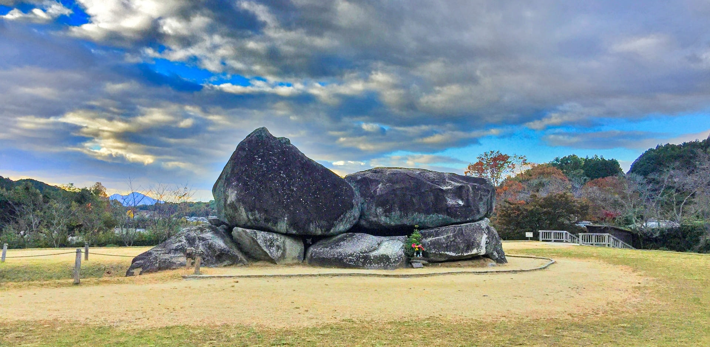

日本のはじまりを歩く。
明日香村は奈良県の中央に位置し、古代国家形成の舞台となった歴史ある村です。 石舞台古墳や飛鳥寺、高松塚古墳、キトラ古墳など、日本を代表する史跡が数多く残され、 四季折々の自然とともに歴史散策を楽しめます。
教科書で見た史跡を実際に歩いて巡る楽しさ、田園風景の中をゆっくり散策する心地よさ、 四季折々の花々や夕景を写真に収めるひととき、古民家カフェで地元の味を楽しむ時間など、 明日香村には人それぞれの楽しみ方があります。
歴史を目的に訪れた人が自然の美しさに魅了されたり、景色を楽しみに訪れた人が古代ロマンに引き込まれたり。 そんな思いがけない出会いがあるのも、明日香村ならではの魅力です。
新着情報
- イベント情報を更新しました。
- よくある質問を追加しました。
- イベント情報を追加しました。
- 体験するページを追加しました。
- モデルコースのページを追加しました。
- 飛鳥おもいで堂の情報を追加しました。
- 奥山久米寺の情報を追加しました。
- 駐車場情報を更新しました。
- 飛鳥京跡苑池の情報を追加しました。
- 犬養万葉記念館の情報を追加しました。
- トイレ情報を更新しました。
- トイレ情報を更新しました。
- トイレ情報を更新しました。
- 駐車場情報を更新しました。
- 食べるカテゴリーを更新しました。
- 泊まるカテゴリーを追加しました。
- 食べるカテゴリーを追加しました。
- トップページをリニューアルしました。
- 駐車場情報を更新しました。
- サイトを公開しました。
明日香村観光ガイドについて
「明日香村観光で迷わない」をコンセプトに、観光スポットだけでなく、駐車場、公衆トイレ、グルメ、おみやげ、宿泊施設など、現地で本当に役立つ情報を分かりやすく掲載しています。旅行前の計画から現地での散策まで、快適な旅をサポートいたします。
よくある質問
明日香村へのアクセス方法は？最寄り駅はどこですか？
最寄りは近鉄飛鳥駅で、多くのモデルコースも飛鳥駅を出発地点にしています。近鉄橿原神宮前駅から向かうルートもあります。各スポットの詳細ページには、飛鳥駅からの徒歩時間と、最寄りバス停からの徒歩時間を載せています。
駐車場はありますか？
駐車場ページでは村内の駐車場を、料金・収容台数つきで紹介しています。
トイレはどこにありますか？
トイレマップで村内の公衆トイレを紹介しています。多目的トイレの有無も載せていますが、一部はバリアフリー非対応です。
観光の所要時間はどれくらいですか？
明日香村には見どころがたくさんあるので、すべてを1日では周りきれません。滞在時間に合わせて選べるモデルコースを用意しています。半日なら徒歩・半日コース（飛鳥駅発、所要時間 約2時間32分）、1日使える場合は徒歩・1日（約6時間52分）、サイクリング・1日（約8時間38分）、ドライブ（自由周遊）のコースがあります。
自転車で回れますか？レンタサイクルはありますか？
自転車での周遊もおすすめです。モデルコースページにサイクリング・1日コース（約8時間38分）があり、レンタサイクルは飛鳥駅前や亀石・石舞台近くで借りられる店舗情報を体験するページに載せています。料金・営業時間・車種は各店舗へ事前にご確認ください。
明日香村にある世界遺産は何ですか？
2026年7月26日に世界文化遺産に登録された「飛鳥・藤原の宮都」は、明日香村・橿原市・桜井市にまたがる19件の遺跡で構成されています。そのうち明日香村にあるのは、大官大寺跡（橿原市にもまたがる）を含めて15件です。飛鳥宮跡、飛鳥京跡苑池、飛鳥水落遺跡、酒船石遺跡、飛鳥寺跡、橘寺跡、川原寺跡、檜隈寺跡、石舞台古墳、牽牛子塚古墳、大官大寺跡、天武・持統天皇陵古墳、中尾山古墳、キトラ古墳、高松塚古墳で、いずれもサイトに詳細ページがあります。
高松塚古墳の壁画は見られますか？
壁画の実物は、古墳の中では見られません。隣接する高松塚壁画館で、壁画の複製展示を見学できます。
石舞台古墳の料金と時間は？
営業時間は8:30〜17:00（受付は16:45まで）、年中無休です。料金は大人300円、中学生以下100円。所要時間の目安は30分です。駐車場は石舞台古墳のページで案内している石舞台駐車場（普通車500円）や国営飛鳥歴史公園・石舞台地区駐車場（無料）が近くにあります。
国営飛鳥歴史公園館は開いていますか？
現在は開いていません。改装のため休業中です。再開は2030年頃の予定です。詳しくは国営飛鳥歴史公園館のページをご覧ください。
雨の日でも楽しめる場所はありますか？
飛鳥資料館や奈良県立万葉文化館、キトラ古墳壁画体験館「四神の館」など、屋内で見学できる博物館・資料館のスポットも紹介しています。スポット一覧の「博物館」カテゴリーから探せます。